Ars, apesar
de ser muito antiga, pois há documentos do século X que confirmam a existência
do lugar e também 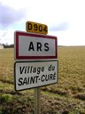
Por causa das péssimas estradas, Ars achava-se perdida numa imensa solidão. Era um verdadeiro “buraco”, em toda extensão da palavra. Os habitantes, por natureza indolente, saíam muito pouco de casa. Em face de um lençol de neblina que se havia estendido sobre a campina, sua visão por onde passava ficou prejudicada e como não tinha quem os guiasse, andaram vagando sem rumo certo. Vendo uns pequenos pastores no campo, pediram-lhes informações. O mais esperto deles, de nome Givre, levou-os ao caminho certo. Agradecendo o Padre Vianney disse: "Meu caro pequeno, tu me mostraste o caminho de Ars, eu te mostrarei o caminho do Céu".
O pequeno lugarejo estava a 30 quilômetros de Ecully, o que permitiu o Padre Vianney viajar a pé com sua pouca bagagem e foi acompanhado pela senhora Bibost que o ajudava com as roupas e na culinária. Atrás vinha uma carroça trazendo um pouco de roupa, a cama e os livros que herdara do Padre Balley. Aproximando-se do lugarejo, “avistou algumas chaminés espalhadas ao redor de uma humilde Capela. Ao divisar, à luz do crepúsculo, vendo aquelas casas cobertas de palha, pensou: Quão pequena és”! Apenas pensou, mas logo movido por um pressentimento sobrenatural acrescentou: “Com o tempo esta Paróquia não poderá comportar os que a ela virão”. Então se ajoelhou no chão e respeitosamente invocou o Anjo daquela Paróquia. Chegando, visitou a Igreja em primeiro lugar, antes de qualquer outra providência.
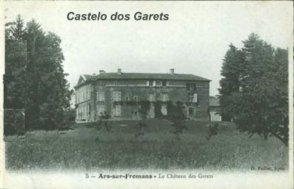
Padre Vianney, sem perder tempo em inúteis lamentações, pôs logo mãos à obra. Não tinha a pretensão de converter todo o mundo, mas ao menos àquela pequeniníssima aldeia, cujas almas DEUS acabava de lhe confiar.
Não se preocupou com o arranjo da Casa Paroquial. Confiou todo o cuidado à viúva Bibost, mais entendida do que ele em assuntos de ordem doméstica. Terminada aquela fase inicial, ela voltou para a sua casa e sua família em Ecully.
Uma vez instalado, empreendeu logo a campanha para a conquista das almas. Era necessário conseguir estabelecer alguma ascendência sobre o povo a fim de poder realizar a sua obra de conversão. Visitar umas 60 casas, não era difícil fazê-lo, mas o que preocupava era o “modo” de realizá-lo. Ou seja, fazer uma visita amigável, mas também começar deixando uma mensagem edificadora em cada coração. Procurava saber das famílias, o número de filhos, a idade, os seus parentes, as amizades, o trabalho que realizavam etc. No final, uma palavra sobre religião lhe permitia conhecer o maior ou menor grau de fé que existia em cada casa. Neste ponto, quanta miséria! O Padre Vianney constatou com grande pesar que a maioria dos habitantes ignorava as noções fundamentais do catecismo, principalmente os que tinham nascido durante a Revolução Francesa, ou seja, os rapazes e moças de 25 a 30 anos de idade. Deles, primordialmente é que provinham os vícios e a corrupção. Como trazer ao redil ovelhas tão cegas?
LUTA PELA CONVERSÃO DO POVO
Bem cedo, com uma lanterna na mão, o
“bom soldado de CRISTO”
ia para o Santuário e se punha de joelhos 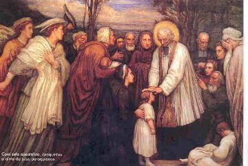
À oração perseverante, o Cura d’Ars acrescentou a penitência e, não resta dúvida, foi para praticá-la sem ser visto que quis viver sozinho na velha casa canônica. A santidade do Padre Vianney lhe dava a convicção: “Se houvesse quem expiasse pelos pobres pecadores, seria mais fácil DEUS perdoá-los. Era, pois necessário a todo custo salvar as almas”. Já no dia de sua chegada, deu o colchão de presente para um pobre. Ele mesmo não precisava de cama, por muitas semanas deitou-se sobre uns sarmentos (ramos ou galhos de arvore flexíveis) colocados num canto do andar térreo. A umidade da parede e do pavimento atuou sobre ele, fazendo-o contrair uma nevralgia facial que o fez sofrer durante 15 anos. Então, ao invés de ir para o quarto foi para o sótão. Um morador de Ars, que a meia noite foi buscá-lo para assistir um moribundo, viu-o baixar do incomodo poleiro. Lá em cima, estendia-se sobre o assoalho, com a cabeça apoiada num pedaço de madeira. Muitas vezes, antes de dormir, ele praticava uma penitência, flagelando o próprio corpo. Mais tarde, chamaria tais excessos de “loucuras da juventude” , reconhecendo de certo modo que foi além dos justos limites. Dizia ele a um sacerdote: “Quando se é moço comete-se muitas imprudências”.
A viúva Bibost antes de regressar a Ecully, quis deixar uma substituta na pessoa da viúva Renard. Ela assumiu a missão de modo muito sério, levando pão fresco e levando pratos saborosos preparados em sua casa. O Padre Vianney não comia nada e distribuía tudo aos pobres. Mas ela não desanimava, semanas seguidamente, até que por fim ele acabava comendo alguma coisa. Ela suspirava: “Como é difícil servir a um Santo”!
Este duro regime do Padre durou até 1827, até que foi organizada a “Casa da Providência” , onde começou a fazer as suas refeições.
No dia 14 de Outubro de 1839, num confidencial colóquio com o Padre Tailhades, jovem sacerdote de Montpellier que viera a Ars aprender e se inspirar no apostolado do Padre Vianney, disse-lhe o segredo de suas primeiras conquistas: “Meu amigo, o demônio não faz muito caso da disciplina e de outros instrumentos de penitência. O que o põe em debandada são as privações: no comer, no beber, no dormir, etc. Nenhuma coisa o faz temer tanto como isso. E por outro lado, nada é tão agradável a DEUS como estas penitências”.
GUERRA CONTRA A IGNORÂNCIA
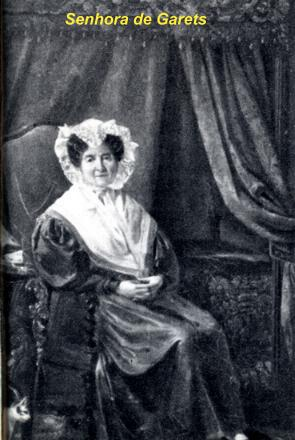
Padre Vianney decidiu embelezá-la e começou pelo principal, o Altar. Pagou tudo com o seu próprio dinheiro. Foi uma grande alegria que envolveu os trabalhadores a reconstruir o Altar-mor, dando-lhe beleza e segurança. De cada lado do sacrário colocou duas pequenas imagens, cabeças de Anjo, que ele foi comprar em Lion e completou a ornamentação retocando as molduras e os arabescos. Depois, num dia em 1825, voltou a Lion em companhia da castelã de Ars comprar paramentos, toalhas e objetos para a Igreja.
Estas transformações materiais não foram inúteis, porque comprovaram o zelo do pastor, assim como alegrou as almas fervorosas.
O jovem sacerdote quis agora preparar as crianças e jovens para a Primeira Comunhão, que andava esquecida naquela época. Para isto propôs reuni-los todos os dias às 6 horas da manhã, antes do trabalho. Terminado o Catecismo de uma hora, voltavam para as suas casas e para o trabalho. Francisco Pertinand, dono de um hotel, contava: “O Padre Vianney servia-se de piedosos estratagemas para atrair a criançada à Igreja. Ele dizia: “Darei um santinho ao que chegar primeiro à Igreja”. Para ganhá-lo havia quem chegasse antes das quatro horas da madrugada”.
Padre Vianney deu Catecismo até o dia em que recebeu um auxiliar e isto só aconteceu em 1845.
Graças aos infatigáveis cuidados do homem de DEUS, os meninos de Ars chegaram a ser os mais bem instruídos da comarca.
Mais ardente ainda foi o zelo que ele empregou para instruir os fiéis paroquianos por meio da pregação. Na sacristia instalou-se convenientemente e ali manuseou e leu exaustivamente “A Vida dos Santos”, “o Catecismo do Concílio de Trento” , “o Dicionário Teológico de Gergier”, “os trabalhos espirituais de Rodriguez”, “os Sermonários de Le Jeune”, “de Joly” e “de Bonardel” , preparando o assunto de suas homilias. Pedia ao SENHOR com lágrimas que lhe inspirasse os pensamentos e as palavras que haveriam de comover e converter o seu povo. Chegava a escrever oito a dez páginas numa noite! Em certas ocasiões chegava a trabalhar sete horas consecutivas, até pela madrugada. Em seguida, era chegado o momento de confiar à memória o que tinha escrito. Esta era a parte mais difícil da tarefa. Durante a noite de sábado para domingo ensaiava em voz alta dedicadamente, objetivando apresentar a melhor mensagem. E enfim, no dia seguinte, o sacerdote subindo ao púlpito cumpria uma obrigação necessária de seu sagrado ministério. Embora a entonação de sua voz e os gestos fosse espontânea, ele pregava vigorosamente num tom de voz mais elevado. A castelã de Ars certa vez lhe disse: “Por que Vossa Reverendíssima se esforça tanto quando prega? – Tenha mais pena de si, senhor Cura”. E outra pessoa lhe perguntou: “Por que o senhor quando prega fala tão alto e quando reza, fala tão baixo”? Respondeu o Padre: “Quando prego eu falo aos surdos e quando rezo falo com DEUS”.
Ele se esforçava para obter dos fieis uma devida e respeitosa compostura na Igreja. Havia muita displicência que bem demonstrava o enfado que sentiam dentro do templo, ouviam-se cochichos e às vezes ruidosos bocejos, alguns ficavam olhando o vestido ou a roupa dos outros, enquanto as crianças ficavam rindo e fazendo sinais uns para os outros. Ele não desanimava, ensinava e catequizava o povo estimulando-lhes a fé adormecida, tirando-os da ignorância de DEUS. Combatia a falta de instrução oferecendo meios e condições para as pessoas estudar, conhecer a religião, despertar a verdadeira confiança em DEUS e saber amá-LO, assim como saber respeitá-LO.
LUTA CONTRA O TRABALHO AOS DOMINGOS, CONTRA AS TABERNAS E CONTRA AS BLASFÊMIAS
Padre Vianney vivia preocupado e procurava
soluções para os diversos problemas da Paróquia. A maior parte dos 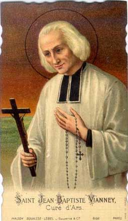
Também, logo chegando o mês de Junho, com seus dias compridos de verão, a Igreja estava quase vazia, o pessoal se dedicava integralmente ao trabalho. Os profanadores do domingo trabalhavam durante longas horas sem nenhuma outra preocupação! Terminado o trabalho, voltavam para casa e saíam para as festas costumeiras, enquanto alguns iam à taberna e bebiam até a embriaguez. Os rapazes e as moças e muitos “velhos salientes”, se reuniam debaixo das nogueiras da praça e ao som de um ou vários violões, cantavam acompanhado de estrondosas gargalhadas, contavam piadas e blasfemavam a vontade. O Padre podia ver tudo isto, e chorava de desgosto. Naquela época, para sua maior tristeza, Ars era famosa por sua “alegria” e era o “lugar predileto dos dançarinos e dançarinas” . Como poderia suportar tudo aquilo, mil ocasiões de pecados sendo oferecidas às almas, bem a sua frente, diante de seus olhos!
Então ele decidiu reagir. No século passado a taberna foi considerada como lugar de dissolução e ele concordava. Acaso não era ali que se formavam os grupos para o baile e onde a conversa livre difamava e caminhava para a blasfêmia, onde as fortunas se arruinavam, onde se perdia a saúde e onde começavam as rixas que até podia originar em assassinato? Padre Vianney “abriu o verbo”: “A taberna é a tenda do demônio, a escola do mal onde o inferno prega e ensina a sua abominável doutrina, e o lugar onde as almas são entregues a satanás. Os taberneiros estão a serviço do capeta, roubam o pão das pobres esposas e de seus filhos, enchendo de vinho estes beberrões que gastam no domingo o que ganharam durante a semana. Ah! Os taberneiros! O demônio não os importuna muito, porque vocês trabalham para ele. Mas já vão ver, eles vão lhe cuspir em cima”...
Estas violentas palavras causaram mais impressão aos fiéis presentes do que aos taberneiros, os quais poucos frequentavam a Igreja. Mas não importava, porque ele ia alcançando o seu fim, os paroquianos foram se afastando das tabernas da praça e das outras. Em consequência, com o tempo conseguiu que não houvesse mais tabernas na vizinhança da Igreja. As duas últimas que existiam, em locais mais distantes, acabaram também por desaparecer. A maldição do Padre Vianney era forte e ameaçadora: “Vós vereis arruinados todos aqueles que aqui abrirem tabernas”, profetizava o Santo Cura.
Seguindo o seu ideal de converter os habitantes de Ars, com voz forte e incisiva, atacava a blasfêmia: “Não é um milagre extraordinário, que a casa onde se acha um blasfemo não seja destruída por um raio, ou seja, cumulada com toda sorte de desgraças? Tomai cuidado! Se a blasfêmia reinar em sua casa tudo perecerá. A blasfêmia é a conversa que satanás e seus asseclas utilizam no inferno”!
Assim ele reprimia a blasfêmia com uma corajosa severidade, e procurava por todos os meios fazê-la objeto de horror para as crianças e os jovens.
A luta contra o trabalho aos domingos exigiu do Cura d’Ars oito anos de constantes esforços. Mesmo assim não o aboliu de todo. Com tristeza e às vezes chorando ele gritava do púlpito: “Que acabais de fazer? Venderam a alma ao demônio e crucificaram NOSSO SENHOR outra vez? Quando os vejo carroceando aos domingos, tenho a impressão de vê-los carregando as suas próprias almas para o inferno! O domingo é um dom de DEUS, é o seu dia. É o dia do SENHOR”. Ele perguntava: “Com que direito vos apoderais do que não vos pertence? Saibam que os bens roubados não trazem proveito”.
Houve, entretanto casos em que o Padre Vianney deixou-os trabalhar. Assim, em certo domingo, chegou a saber, sem protestar, que continuavam abrindo um poço. Do mesmo modo, quando o mau tempo persistia e a colheita perigava, ele não se opunha que violassem o repouso dominical. O que o Padre Vianney nunca fez foi autorizar diretamente a ninguém, em público ou em particular, a trabalhar no domingo.
LUTA CONTRA AS DANÇAS
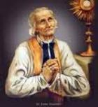
O Padre começou o combate pregando assim: “Uma moça apaixonada pelo baile não poderá gostar dos prazeres simples e puros. Não tem mais espírito cristão. Sua família se aprova, não pode ser uma família onde as práticas religiosas são tidas na devida estima. Essa jovem e os seus não terão uma religião séria enquanto não abandonarem as suas idéias e hábitos mundanos. Quem quiser evitar o pecado deve fugir da ocasião”. O Cura d’Ars foi inexorável, ajuntou sob um mesmo anátema o pecado e a ocasião. Ele atacava a dança, a paixão impura alimentada por ela e a liberdade que se permitiam aos jovens antes do casamento. Ele dizia mais: “Não há um só Mandamento na Lei de DEUS que o baile não transgrida. As mães dizem que cuida das suas filhas! Elas cuidam dos seus enfeites, mas não podem velar pelos seus corações. Vão, mães e pais réprobos, vão para o inferno, onde vos espera a ira de DEUS. Lá vos aguardam as boas obras que tendes feito, deixando seus filhos à vontade. Vão, eles, os seus filhos, não tardarão a se juntarem a vós, pois tão bem lhes ensinastes o caminho. E então vereis se o vosso Cura tinha ou não razão de vos proibir esses prazeres infernais”.
Das palavras passava a ação direta. Certo dia ele mesmo foi ao encontro do músico. Ele dizia consigo mesmo: “Quem acaba com o violão, também acaba com o baile” . O tocador entrava no povoado com o instrumento debaixo do braço, ele perguntou: “Quanto lhe pagam para tocar”? E no mesmo momento o Cura lhe dava o dobro do valor e dispensava o músico, que dava meia-volta e seguia satisfeito para sua casa.
Felizmente havia no povoado muitas moças bem educadas e ajuizadas, de famílias responsáveis e verdadeiramente cristãs, que pelo seu temperamento não foram contagiadas pelas outras.
Ministrando o Sacramento da Confissão, o Padre era intransigente, partia do principio de que não podiam ser absolvidos os pecadores sem que renunciassem à ocasião do pecado, quando esta existia. Assim, ele negava a absolvição no Confessionário, mesmo por uma única falta, até a conversão total da pessoa.
A jovem Catarina Treve contava que no mês de Fevereiro dançou uma vez num casamento. O Cura d’Ars adiou a sua absolvição no Confessionário até a Festa da Assunção de Nossa Senhora (15 de Agosto).
A senhora Butillon confirmava que teve de esperar mais de quinze dias, quase três semanas, para ser absolvida em sua confissão Sacramental, só por ter ido à feira de Montmerle. Não tinha dançado, porém: “foi ao lugar onde se dançava”.
Um pai de família que ainda não conhecia bem o seu pastor expôs-lhe o seguinte caso de consciência: “Posso acompanhar minha filha ao baile”? Respondeu o Sacerdote: “Não, meu amigo”. Ele quis explicar: “Mas eu não a deixarei dançar”. E o Santo concluiu com sua profunda psicologia: “Ó, se ela não dançar, dançará o seu coração”.
Esta era a norma do Padre Vianney em matéria de danças, que manteve por toda a sua vida. Sempre inculcava nos pais, a realidade de que eles deviam ser carinhosos e amorosos, assim como vigilantes e responsáveis pelas faltas dos filhos.
Certo domingo, duas jovens irmãs foram, sem licença do pai, ver o baile numa festa de Savigneux, distante dois quilômetros. Elas não dançaram, só olharam por pouco tempo e regressaram a casa. Mas seus pais perceberam as suas ausências. Quando chegaram e explicaram, o pai pegou um chicote e castigou-as severamente.
As modas indecentes também foram atacadas, porque ele percebia que elas estavam parelhas com os prazeres corruptores. Era um provocante meio de incitação. Na Igreja jamais tolerou decotes e nem braços nus. Na verdade, os visitantes de Ars durante 30 anos puderam contemplar e admirar na Igreja, nas ruas e nas estradas, as senhoras e as moças da aldeia vestidas com dignidade, simples e modestas como se fossem verdadeiras monjas.
RESTAURAÇÃO DA ANTIGA IGREJA
Depois de ter
melhorado e embelezado o Altar de celebrações, no ano de 1824 o Padre decidiu
aumentar o corpo da 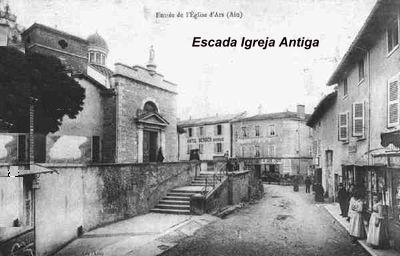
CALÚNIAS E TENTAÇÕES
Para impor a disciplina e saber organizar a Casa de DEUS é necessário pulso forte e decisão, porque forçosamente a conduta honesta sempre faz nascer uma reação contrária daqueles que querem manter a desordem, os vícios e os pecados. As injúrias sofridas pelo Padre Vianney, foram obras de espíritos ignorantes, maldosos, cegos e perversos. E esta reação veio violenta, sobre a forma de calúnias e inverdades contra o sacerdote, que nunca procurou se defender, mas diariamente deixava o seu exemplo maravilhoso que atestava a força de seu caráter e a pureza de seu coração. Inclusive, por trama caluniosa urdida junto às autoridades diocesana, quiseram removê-lo de Ars. Sem qualquer resistência ele aceitou. Mas os verdadeiros habitantes, os cristãos que cultivavam a sua fé e conheciam muito bem o Padre Vianney, se reuniram e testemunharam a favor dele em Lion, realçando o seu valor e pureza, exigindo que ele permanecesse em Ars.
OBRAS DE APOSTOLADO
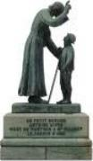
As palavras do sacerdote encontraram todos os corações, inclusive aqueles mais sensatos e carinhosos que compreenderam a necessidade de fazer companhia ao SENHOR. E daquele dia em diante, de modo admirável, a frequência e a atenção do povo foi sempre crescente, revelando individualmente uma sincera e calorosa resposta de amor a DEUS.
Então surgiram cenas comovedoras... Aquele agricultor antes de ir para o trabalho sempre visitava JESUS Sacramentado... Certo dia um vizinho perguntou-lhe: “Que fazes tanto tempo na Igreja”? E ele respondeu: “Olho para DEUS e DEUS olha para mim”. Esta singela narração que o Cura d’Ars gostava de repetir para os seus paroquianos, inflamava o seu coração e o fazia chorar. Ele dizia: “Vê, meus filhos, tudo consiste nisso: ele olhava para DEUS e DEUS olhava para ele”.
As ruínas morais acumuladas pela Revolução clamavam por urgente reparação. Havia ignorância e corrupção por toda a parte! Em diversas regiões ocorreram reações das autoridades religiosas. Na arquidiocese de Lion criaram as missões, como única maneira de despertar aquelas almas do torpor em que jaziam. Sacerdotes da mesma comarca faziam os mutirões regionais, juntando todos os sacerdotes para atender as áreas mais abandonadas e necessitadas. Por isso o Cura d’Ars foi chamado para exercer em muitas Paróquias vizinhas as funções de confessor e pregador. A fama de santidade dele já havia atravessado a França, de modo que a capela onde ouvia confissões nunca ficava vazia.
Numa missão em Montmerle em 1826, como não havia lugar na Casa Paroquial, o Padre Vianney ficou hospedado na casa da sexagenária senhora Mondesert que residia na Rua Mínimos, ao lado da Igreja, e exercia sem nenhuma remuneração, a função de sacristã. Secretamente o Cura d’Ars pediu a criada que cozinhasse uma panelada de batatas e colocasse no quarto dele. Findo os 10 dias de trabalho, o Pároco de Montmerle foi agradecer a boa senhora e pagar-lhe os gastos que ela teve com o hóspede. A senhora respondeu: “Ó senhor Padre, por tão pouco eu não vou cobrar nada”. O Padre disse: “Mas e a alimentação dele? Ele não fez refeições comigo na Casa Paroquial”! Respondeu à senhora: “Nem aqui tão pouco ele comeu. Ele permanecia só uns cinco minutos e logo voltava para a Igreja”. Nesse momento interveio a criada e contou a história da panelada de batatas. Subiram ao quarto onde ele esteve e encontraram atrás da estufa a panela vazia. Em 10 dias ele somente comeu aquela panelada de batatas, atendendo confissão o dia inteiro, até o horário de fechar a Igreja.
Certo dia, estando ele mesmo doente e com febre, foi a pé visitar um enfermo em Savigneux para ouvi-lo em confissão. Estava tão fraco que teve de voltar num carro. O mesmo aconteceu num dia chuvoso do outono, ao ser chamado por uma família em Rance, que suplicava os socorros de seu ministério. Molhado até a medula dos ossos, ardendo em febre, quando chegou junto ao doente viu-se obrigado a se recostar na mesma cama. Nessa posição ouviu a confissão. “Estava mais doente do que o próprio doente” , disse ao regressar.
A senhora Catarina Lassagne sempre afirmava: “Era assim que o nosso Cura se sacrificava pelas almas”.
A CASA DA PROVIDÊNCIA
Ars não possuía escolas e não havia professores.
No inverno chamavam um professor de fora e todos juntos, 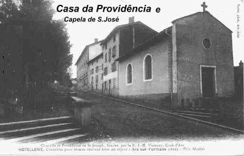
Em Março do mesmo ano o Cura adquiriu uma nova casa chamada “Maison Givre” (Casa do Orvalho), construída perto do cruzeiro da Igreja. Para comprá-la recorreu à caridade dos fiéis, e sacrificou tudo quanto possuía de bens particulares. Era seu desejo estabelecer ali um colégio gratuito para meninas. As duas professoras Catarina Lassagne e Benita Lardet, começaram em 1824 a fazer funcionar a escola, contando com a ajuda de Joana Maria Chanay. No inicio a escola passou a funcionar como pensionato, porque recebeu moças de diversas cidades próximas. O senhor Cura não exigia nenhuma retribuição em dinheiro. Aceitava sim, de bom grado, a caridade das pessoas que doavam alimentos e moveis.
Padre Vianney satisfeito vendo que sua modesta escola atuava de modo eficiente, teve uma nova inspiração. Ele tinha visto nos arredores do povoado várias criaturinhas pobres e infelizes, órfãs, sem casa, filhas de pais desnaturados ou indigentes, sem religião e que viviam mendigando ou trabalhando em situação precária como empregada. O coração compassivo do sacerdote resolveu estabelecer na mesma escola um orfanato com o significativo nome “Casa da Providência”. Mas para isto era preciso aumentar a casa. Contando com a ajuda do povo e da Prefeitura, o Padre comprou um terreno vizinho, ele mesmo fez a planta e também trabalhou de ajudante de pedreiro durante a construção.
Terminada a obra, exigiu que a Casa só admitisse como pensionistas as pobres órfãs abandonadas. As meninas de Ars continuariam a ser recebidas, mas como externas. As meninas que vinham dos povoados vizinhos não foram mais admitidas desde princípio de 1827. As órfãs não eram admitidas antes dos 8 anos de idade e só as deixavam sair depois da primeira comunhão Eucarística. Em casos especiais, quando aparecia alguma mocinha pobre de 15, de 18 e até mesmo de 20 anos, o senhor Cura, de boa vontade, a recolhia, pois na verdade, talvez essas, mais do que as outras, necessitavam de uma mãe e de um lar. A misericórdia do Padre Vianney pela infância abandonada era ativa e fecunda.
No orfanato ele gastou todos os seus bens particulares. Quando o seu irmão Francisco chegou de Dardilly para lhe entregar parte da herança deixada pelo pai, destinou toda a quantia em favor da “Providência”. Naquela época já chegavam a 60 o número de meninas, que estudavam, se alimentavam, dormiam e se vestiam e como imaginamos, todas aquelas boquinhas tinham muita apetite. Tinha que haver recursos para tudo isto, e na verdade, eles eram muito escassos.
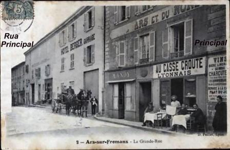
Monsenhor Devie visitando aquele lugar com o Padre Vianney, perguntou-lhe: “O trigo chegou até aqui, não é verdade”? O Bispo apontava com o dedo um ponto bastante alto na parede. – “Não, Excelência, mais acima... Até aqui”.
Um bom tempo depois houve outro prodígio que tornou célebre a amassadeira da “Casa da Providência”. A seca desolava a Comarca. A farinha ficou escassa e cara. Na Casa restava apenas o suficiente para fazer três pães. Conta Joana Maria Chanay: “Nós estávamos em grande apuro por causa das meninas, mas na verdade, eu e Catarina tínhamos fé de que se o Padre Vianney pedisse a DEUS, conseguiríamos que a farinha fizesse uma fornada de pães. Fomos procurá-lo e lhe expomos a situação”. Ele disse: “É preciso amassar”. “Não perdemos tempo, voltamos e começamos a trabalhar, mas naturalmente com certa apreensão. Coloquei um pouco de farinha e água na gamela e mexendo a massa, notei que a farinha ia ficando muito espessa. Coloquei mais água e continuamos a mexer a massa. A gamela foi enchendo de massa como nos dias em que se colocava um saco inteiro. Fizemos dez grandes pães, cada um pesando quase 10 quilos. O forno ficou cheio como de costume, com grande admiração de todos que testemunharam”.
E como este, muitos outros fatos interessantes e admiráveis aconteceram. Padre Vianney apenas dizia: “DEUS é muito bondoso! ELE cuida muito bem de seus pobres”!
Foi na “Casa da Providência” e na sala de aulas que começaram os famosos Catecismos de Ars. A aula da manhã terminava com a recitação da Ladainha da Providência. Depois entrava o senhor Cura. No começo, só assistiam a catequese as professoras e as meninas. Os forasteiros que vinham procurá-lo e não o encontravam na Igreja, na sequência, decidiram também participar da sua catequese. A partir de 1845 a afluência de peregrinos foi tão crescente, que obrigou o Padre Vianney explicar o Catecismo na Igreja. E ele sem perder o tom familiar e paternal, deixava escapar frequentemente aquela chama de seu imenso e desmedido amor a DEUS, que lhe abrasava o coração.


=IMAGENS DA ÉPOCA=
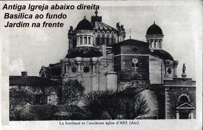
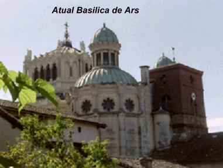
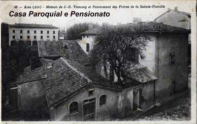
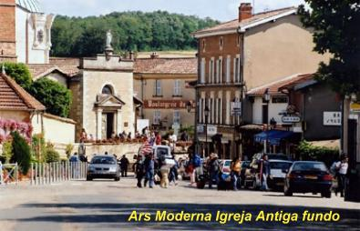
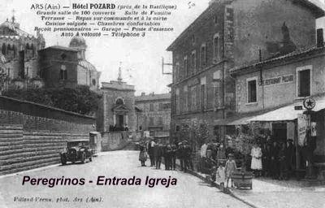